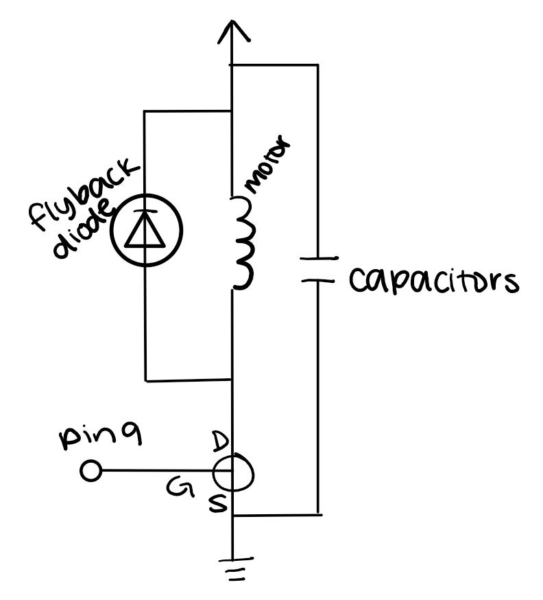
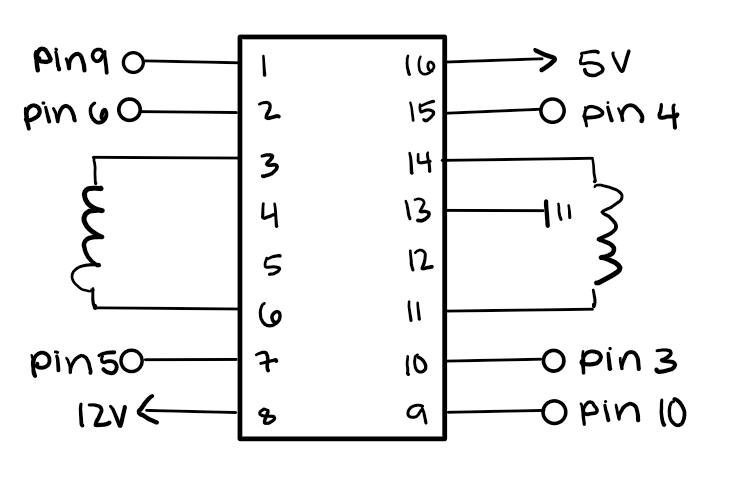

// use the remote library
#include
// power code (from remote)
const long power = 3125149440;
// pin connected to ir receiver
const int receivePin = 6;
// pin connected to leds
const int ledPin = 10;
// track whether the leds are on or off
int powerOn = false;
// brightness of the leds
int maxBrightness = 255;
// run once at the beginning
void setup() {
// set up the ir receiver with the receiver pin
IrReceiver.begin(receivePin, ENABLE_LED_FEEDBACK);
// set the pin connected to leds to output
pinMode(ledPin, OUTPUT);
}
// repeat forever
void loop() {
// check if the ir receiver received anything
if (IrReceiver.decode()) {
// figure out if the power button was pressed
if (IrReceiver.decodedIRData.decodedRawData == power) {
// check if the power is currently on
if (powerOn) {
// turn the led brightness to 0
analogWrite(ledPin, 0);
// change state of power
powerOn = false;
// otherwise, power is off
} else {
// turn the led brightness to the max
analogWrite(ledPin, maxBrightness);
// change state of power
powerOn = true;
}
}
}
} schematic:
datasheets:
pseudocode:
both forward:
pin 6: low
pin 5: high
pin 4: low
pin 3: high
both back:
pin 6: high
pin 5: low
pin 4: high
pin 3: low
left forward/right back:
pin 6: low
pin 5: high
pin 4: high
pin 3: low
left back/right forward:
pin 6: high
pin 5: low
pin 4: low
pin 3: highschematic:
